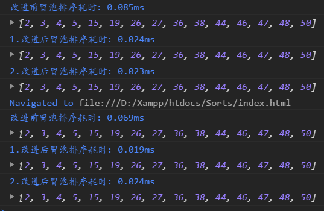
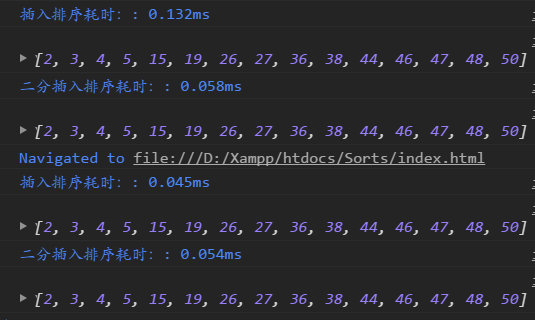

# 简单排序
# 前言
本人平时学习及收集内容，欢迎参入一起讨论。
# 内容
# 一、排序算法说明
# 1.1 定义
- 定义：对一序列对象根据某个关关键字进行排序
- 输入：n 个数：
a1,a2,a3,…,an - 输出：n 个数的排列:
a1’,a2’,a3’,…,an’，使得a1’<=a2’<=a3’<=…<=an’。
# 1.2 算法优劣术语的说明
- 稳定：如果 a 原本在前面，而 a=b，排序之后 a 仍然在 b 的前面。
- 不稳定：如果 a 原本在 b 的前面，而 a=b，排序之后 a 可能会出现在 b 的后面。
- 内排序：所有排序操作都在内在中完成；
- 外排序：由于数据太大，因此把数据放在磁盘中，而排序通过磁盘和内在的数据传输才能进行；
- 原地排序：空间复杂度是 O(1)的排序算法。
- 时间复杂度：一个算法执行所耗费的时间。
- 空间复杂度：运行完一个程序所需内存的大小。
关于时间复杂和空间复杂度更多了解可以点击这里
# 1.3 排序算法图片总结
排序对比：

名词解释:
n：数据规模k：“桶”的个数In-place：占用常数内存，不占用额外内存Out-place：占用额外内存
排序分类：

# 二、冒泡排序
# 2.1 算法描述
冒泡排序是一种简单的排序算法。它重复地走访过要排序的数列，一次比较两个元素，如果它们的顺序错误就把它们交换过来。走访数列的工作是重复地进行直到没有再需要交换，也就是说该数列已经排序完成。这个算法的名字由来是因为越小的元素会经由交换慢慢“浮”到数列的顶端。
具体算法描述如下：
- 比较相邻的元素。如果第一个比第二大，就交换它们两个；
- 对每一对相邻元素作同样的工作，从开始第一对到结尾的最后一对，这样在最后的元素应该会是最大的数；
- 针对所有的元素重复以上的步骤，除了最后一个；
- 重复步骤 1~3，直到排序完成。
# 2.2 代码实现
function bubbleSort(arr){
var len = arr.length;
for(var i = 0;i<len;i++){
for(var j=0;j<len-1-i;j++){
if (arr[j] > arr[j+1]) { //相邻元素两两对比
var temp = arr[j+1]; //元素交换
arr[j+1] = arr[j];
arr[j] = temp;
}
}
}
return arr;
}
var arr=[3,44,38,5,47,15,36,26,27,2,46,4,19,50,48];
console.log(bubbleSort(arr));//[2, 3, 4, 5, 15, 19, 26, 27, 36, 38, 44, 46, 47, 48, 50]
2
3
4
5
6
7
8
9
10
11
12
13
14
15
16
**改进冒泡排序：**设置一标志性变量 pos，用于记录每趟排序中最后一次进行交换的位置。由于 pos 位置之后的记录均已交换到位，故在进行下一趟排序时只需要扫描到 pos 位置即可。
改进后算法如下：
function bubbleSort2(arr){
console.time('改进后冒泡排序耗时');
var i = arr.length -1;
while(i>0){
var pos =0; // 每趟开始时，无记录交换
for(var j=0;j<i;j++){
if(arr[j]>arr[j+1]){
pos = j; // 记录交换的位置
var tmp = arr[j];
arr[j]=arr[j+1];
arr[j+1]=tmp;
}
i = pos; // 为下一趟排序作准备
}
}
console.timeEnd('改进后冒泡排序耗时');
return arr;
}
var arr=[3,44,38,5,47,15,36,26,27,2,46,4,19,50,48];
console.log(bubbleSort2(arr));//[2, 3, 4, 5, 15, 19, 26, 27, 36, 38, 44, 46, 47, 48, 50]
2
3
4
5
6
7
8
9
10
11
12
13
14
15
16
17
18
19
20
传统冒泡排序中每一趟排序操作只能找到一个最大值或最小值，我们考虑利用在每趟排序中进行正向和反向两遍冒泡的方法一次可以得到两个最终值（最大者和最小者），从而使排序趟数几乎减少了一半。
改进后的算法实现为:
function bubbleSort3(arr3){
var low = 0;
var high = arr.length-1; // 设置变量的初始值
var tmp,j;
console.time('');
while(low<high){
for(j=low;j<high;++j){
if(arr[j]>arr[j+1]){
tmp = arr[j];
arr[j] = arr[j+1];
arr[j+1] = tmp;
}
--high;
}
for(j=high;j>low;--j){
if(arr[j]<arr[j-1]){
tmp = arr[j];
arr[j]=arr[j-1];
arr[j-1]=tmp;
}
++low;
}
console.timeEnd('2.改进后冒泡排序耗时');
return arr3;
}
}
var arr=[3,44,38,5,47,15,36,26,27,2,46,4,19,50,48];
console.log(bubbleSort3(arr));//[2, 3, 4, 5, 15, 19, 26, 27, 36, 38, 44, 46, 47, 48, 50]
2
3
4
5
6
7
8
9
10
11
12
13
14
15
16
17
18
19
20
21
22
23
24
25
26
27
28

# 2.3 冒泡排序动图演示

# 2.4 算法分析
- 最佳情况：
T(n)=O(n)
当输入的数据已经是正序时
- 最差情况：
T(n)=O(n2)
当输入的数据是时
- 平均情况：
T(n)=O(n2)
# 三、选择排序
表现最稳定的排序算法之一，因为无论什么数据进去都是 O（n2）的时间复杂度...所以乃至它的时候，数据规模越小越好。唯一的好处可能就是不占用额外的内存空间了吧。理论上讲，选择排序可能也是平时排序一般人想到的最多的排序方法。
# 3.1 算法介绍
选择排序是一种简单直观的排序算法。它的工作原理：首先在未排序序列中找到最小（大）元素，存放到排序序列的起始位置，然后，再从剩余未排序元素中继续寻找最小（大）元素，然后放到已排序序列的末尾。以此类推，直到所有元素均排序完毕。
# 3.2 算法描述
n 个记录的直接选择排序可以经过 n-1 趟直接选择排序得到有序结果。具体算法描述如下：
- 初始状态：无序区为
R[1...n]，有序区为空； - 第 i 趟排序
(i=1,2,3…n-1)开始时，当前有序区和无序区分别为R[1..i-1]和R(i..n）。该趟排序从当前无序区中-选出关键字最小的记录R[k]，将它与无序区的第 1 个记录 R 交换，使R[1..i]和R[i+1..n)分别变为记录个数增加 1 个的新有序区和记录个数减少 1 个的新无序区； n-1趟结束，数组有序化了。
# 3.3 代码实现
function selectionSort(arr){
var len = arr.length;
var minIndex,temp;
console.log('选择排序耗时');
for(var i=0;i<len-i;i++){
minIndex = i;
for(var j = i + 1; j<len;j++){
if(arr[j]<arr[minIndex]){ // 寻找最小的数
minIndex = j;
}
}
temp = arr[i];
arr[i] = arr[minIndex];
arr[minIndex] = temp;
}
console.timeEnd('选择排序耗时');
}
2
3
4
5
6
7
8
9
10
11
12
13
14
15
16
17
# 3.4 选择排序动图演示

# 3.5 算法分析
- 最佳情况：
T(n)=O(n2) - 最差情况：
T(n)=O(n2) - 平均情况：
T(n)=O(n2)
# 四、插入排序
插入排序的代码实现虽然没有冒泡排序和选择排序那么简单粗暴，但它的原理应该是最容易理解的了，因为只要打过扑克牌的人都应该能够秒懂。当然，如果你说你打扑克牌摸牌的时候从来不按牌的大小整理牌，那估计这辈子你对插入排序的算法都不会产生任何兴趣了…..
# 4.1 算法简介
插入排序的算法描述是一种简单直观的排序算法。它的工作原理是通过构建有序序列，对于未排序数据，在已排序序列中从后向前扫描，找到相应位置并插入。插入排序在实现上，通常采用 in-place 排序（即只需用到 O(1)的额外空间的排序），因而在从后向前扫描过程中，需要反复把已排序元素逐步向后挪位，为最新元素提供插入空间。
# 4.2 算法描述
一般来说，插入排序都采用 in-place 在数组上实现。具体算法描述如下：
- 从第一个元素开始，该元素可以认为已经被排序；
- 取出下一个元素，在已经排序的元素序列中从后向前扫描；
- 如果该元素（已排序）大于新元素，将该元素移到下一位置；
- 重复步骤 3，直到找到已排序的元素小于或者等于新元素的位置；
- 将新元素插入到该位置后；
- 重复步骤 2~5。
# 4.3 代码实现
function insertionSort(array){
if(Object.prototype.toString.call(array).slice(8,-1)==='Array'){
console.time('插入排序耗时：');
for(var i = 1; i<array.length;i++){
var key = array[i];
var j = i-1;
while(j>=0 && array[j]>key){
array[j+1] = array[j];
j--;
}
array[j+1] = key;
}
console.time('插入排序耗时：');
return array;
}else{
return 'array is not an Array';
}
}
2
3
4
5
6
7
8
9
10
11
12
13
14
15
16
17
18
**改进插入排序：**查找插入位置时使用二分查找的方式
function binaryInsertionSort(array) {
if (Object.prototype.toString.call(array).slice(8, -1) === 'Array') {
console.time('二分插入排序耗时：');
for (var i = 1; i < array.length; i++) {
var key = array[i], left = 0, right = i - 1;
while (left <= right) {
var middle = parseInt((left + right) / 2);
if (key < array[middle]) {
right = middle - 1;
} else {
left = middle + 1;
}
}
for (var j = i - 1; j >= left; j--) {
array[j + 1] = array[j];
}
array[left] = key;
}
console.timeEnd('二分插入排序耗时：');
return array;
} else {
return 'array is not an Array!';
}
}
var arr=[3,44,38,5,47,15,36,26,27,2,46,4,19,50,48];
console.log(binaryInsertionSort(arr));//[2, 3, 4, 5, 15, 19, 26, 27, 36, 38, 44, 46, 47, 48, 50]
2
3
4
5
6
7
8
9
10
11
12
13
14
15
16
17
18
19
20
21
22
23
24
25
26
27
28
改进前后对比

# 4.4 插入排序动图

# 4.5 算法分析
- 最佳情况：输入数组按升序排列。
T(n)=O(n) - 最坏情况：输入数组按降序排序。
T(n)=O(n2) - 平均情况：
T(n)=O(n2)
# 参考资料
# 联系作者
平凡世界，贵在坚持。